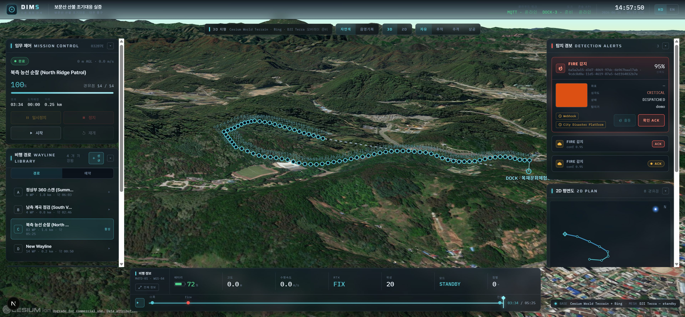
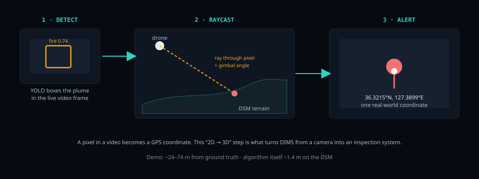
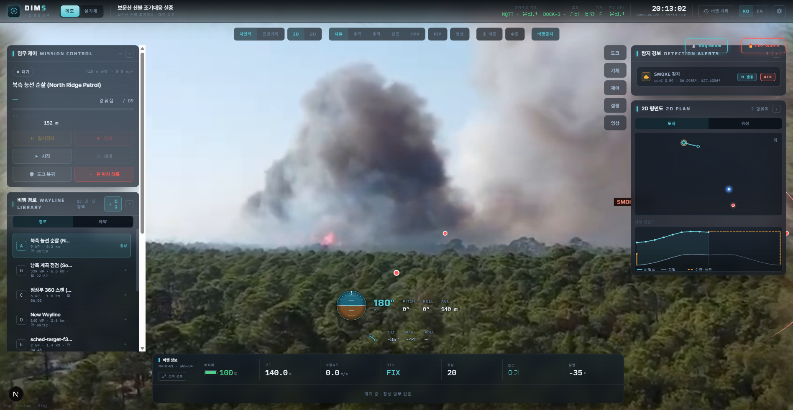

Maps, 3D & Digital Twins 101
To understand DIMS you first need a handful of ideas about where things are and what shape the world is. We’ll build them from absolute zero — no maps or 3D background needed — and arrive at the single trick that turns a drone’s camera into a measuring instrument.
1. How we say “where”
Every spot on Earth can be named with two numbers: latitude (how far north or south) and longitude (how far east or west). Latitude runs 0° at the equator to ±90° at the poles; longitude runs 0° at Greenwich to ±180°. Together they pinpoint any location — the DIMS dock at Bomunsan, a fire on a hillside, your office desk.
Latitude and longitude are like the row and seat number on a concert ticket. Two numbers, and out of the whole stadium there is exactly one chair they point to. Earth just has a very large seating chart.
But a number only means something if everyone agrees where “zero” is and how round the Earth is. That shared agreement is called a datum, and the one your phone’s GPS uses is WGS84 — the World Geodetic System of 1984. It’s the global standard coordinate system. When DIMS says a fire is at 36.2956, 127.4011, those are WGS84 lat/long, the same language Google Maps and every GPS device speak. Because everyone uses WGS84, a coordinate from DIMS can be handed straight to a fire truck’s navigation without translation.
2. Altitude is trickier than it sounds
Height seems simple until you ask “height above what?” There are two very different answers, and confusing them is how drones crash into hills.
- MSL — height above mean sea level. A fixed global reference. A mountain peak is “500 m MSL” no matter what’s under your feet right now.
- AGL — height above ground level. How high you are above the dirt directly below you this instant. AGL changes as the ground rises and falls beneath the drone.
Imagine flying a kite while walking up a hill. Your hand stays a steady 1.5 m above the path (constant AGL), but its height above sea level keeps rising as the hill climbs. Now reverse it: hold the kite at a fixed sea-level height and walk toward a hill — the ground rushes up to meet it. That’s exactly how a drone clips terrain when it only watches MSL.
For a flying robot, AGL is the safety number. A wayline that says “fly at 120 m” must mean 120 m above the terrain the whole way, or the drone will fly straight into a ridge as the ground rises. This need to keep safe terrain clearance is why DIMS has to know the exact shape of the ground — which is the next idea.
3. Describing the shape of the ground
How do you give a computer the shape of a hill? You hand it an elevation model: a grid laid over the area where each cell stores a height. Two flavours matter:
| Model | Stores the height of… | Includes buildings/trees? |
|---|---|---|
| DEM (Digital Elevation Model) | the bare earth | No — ground only |
| DSM (Digital Surface Model) | the top surface | Yes — rooftops, tree canopy, everything |
A DEM is the bald ground if you shaved off every tree and building. A DSM is a bedsheet draped over the city — it follows roofs and treetops. For dodging obstacles you want the bedsheet, because that’s what the drone would actually hit.
DIMS uses a DSM — a grid of surface heights for the area — both to plan terrain-safe flights and, as we’ll see, to figure out exactly where something the camera sees is sitting on the ground.
4. Capturing reality in 3D
An elevation grid is one number per cell. But sometimes you want the full 3D shape of a real object — a tower crane, a building face, a forest. The raw form of that is a point cloud: millions of individual 3D dots, each with its own X/Y/Z, that together trace out the surface like a dense 3D constellation.
There are two common ways to capture a point cloud:
- LiDAR — a sensor fires laser pulses and times the bounce-back. Distance × direction = a 3D point. Do that millions of times a second and you scan a precise 3D shape, even through gaps in foliage.
- Photogrammetry — take many overlapping photos of a thing from different angles; software finds matching features across them and triangulates each point’s 3D position. No laser — just lots of pictures and clever maths.
LiDAR is like tapping a dark room with a cane to feel exactly how far each surface is. Photogrammetry is like how your two eyes judge depth — except with hundreds of “eyes” (photos) from all around the subject, the computer reconstructs the 3D scene from how things shift between views.
DJI’s desktop software DJI Terra does photogrammetry: feed it the drone’s overlapping photos and it reconstructs the 3D point cloud and surface (we cover this in chapter 11). A close cousin of its output is the orthomosaic — all those photos stitched and geometrically corrected into one seamless top-down image where every pixel sits at its true map position. Think of it as a custom, ultra-high-resolution “satellite photo” of just your site, flown today.
5. The digital twin
Now combine everything: take the real terrain shape (DSM), drape imagery over it, and render it in a browser as a 3D world you can fly a virtual drone around. That live, geo-accurate 3D virtual copy of a real place is a digital twin.
In the DIMS console you don’t watch a drone on a flat 2D map — you watch it flying inside a 3D twin of the actual hillside, at its real coordinates and real altitude, over terrain with the real bumps and valleys. The browser engine that renders these accurate 3D globes and terrain is CesiumJS (detailed in chapter 14). “Geo-accurate” is the key word: a point in the twin corresponds to a real WGS84 coordinate, which is what makes the next trick possible.

6. The killer trick: raycasting
Here’s the problem that separates a camera from an inspection system. The AI spots a fire in the video and draws a box around some pixels. Great — but “a fire somewhere in this frame” is useless to a fire crew. They need a coordinate. How do you get from a pixel to a latitude/longitude?
The answer is raycasting. We know exactly where the drone’s camera is (GPS position + altitude) and exactly which way it’s pointing (its gimbal angles). So we shoot an imaginary straight line — a ray — out from the camera, through the detected object’s pixel, and let it travel until it hits the 3D terrain (the DSM). The point where the ray strikes the ground is a real location. Read off its WGS84 lat/long, and the fire that was “some orange pixels” is now “a fire at 36.2956, 127.4011.”
Raycasting converts “a fire in the video” into “a fire at this lat/long.” A virtual ray leaves the camera, passes through the detected pixel, and intersects the 3D terrain model — and that intersection is a real-world coordinate. This single step is what makes DIMS an inspection system instead of just a fancy live-streaming camera.


7. A quick, honest note on accuracy
Raycasting is only as exact as the 3D surface the ray lands on. In the demo, the terrain we draw on screen (a global render terrain) and the DSM we raycast against can sit at slightly different heights — a small datum gap. That mismatch is why demo coordinates can land a few tens of metres off the true spot, even though the raycasting algorithm itself, run on a matching DSM, is roughly metre-accurate. In real-mode flights this gap goes away because both sides use the same model. Short version: the method is sharp; the demo’s two terrains just don’t perfectly agree yet.
When you see a demo alert that looks off by 30 m, it’s not the AI being wrong — it’s the render-vs-DSM datum gap. Knowing the difference saves you from “fixing” a problem that isn’t there.
“A location on Earth is a latitude/longitude in the WGS84 system. Altitude can be measured from sea level (MSL) or from the ground right below you (AGL) — and AGL is what keeps a drone from hitting terrain, which is why DIMS carries a DSM, a grid of surface heights. You can capture reality in 3D as a point cloud via LiDAR or photogrammetry (DJI Terra), and stitch photos into an orthomosaic. DIMS renders a geo-accurate 3D digital twin of the site in the browser with CesiumJS. Its signature trick is raycasting: shoot a ray from the camera through a detected pixel onto the terrain to turn a fire-in-the-video into a fire-at-a-coordinate — which is what makes DIMS an inspection system, not just a camera.”
Next we’ll meet the hardware all of this rides on — the dock and drone that put the camera in the sky.